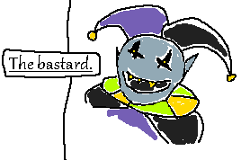

Why am I talking about a lietmotif here? Because Toby Fox is a rat goblin (I mean this in the most endearing way
I can) that loves making lietmotifs oddly important in the story of his games. Specifically Deltarune currently,
the in progress project he and his team are working on. I am by no means an expert on music shenanigans, but I
think I've absorbed enough much more competent analyzations by more deranged people (I mean this as a
complement) and enough of a pattern recongizing brain to see... more like hear something I've seen nobody talk
about.
So, what is a lietmotif? A lietmotif is, 1: an associated melodic phrase or figure that accompanies the
reappearance of an idea, person, or situation especially in Wagnerian music drame, or 2: a dominant recurring
theme, as listed in this dictionary [website], and Mr Fox loves them as far as I can tell.
SO! What the heck am I talking about? So there's this little secret boss near the end of the first chapter, he's a rat goblin (I mean this in the most insulting way I can) deranged jester guy that has a really hard boss fight that I have yet to beat. His song: The World Revolving, is the source of possibly one of the most important lietmotifs in the game, dubbed the freedom motif, and also hosts the other most important lietmotif in the game, the simplistic Gasters theme, which is it's own can of worms. Today, I point towards the motif at the tail end of the song, starting and repeating over and over at one minute and 20 seconds in until the end, which is where it loops around in the game.
Do you hear that repeating pattern of notes? It's from the end of another song called Don't Forget, heard in the
chapter credits, and that one has lyrics tied to it, "- I'm with you in the dark". What this implies to me is on
a meta song level Jevil is saying that, which I don't think is as big as stretch as one might think considering
the other secret boss theme having very crptic words hidden beneath a portion of his own song.
BUT WHAT DOES IT MEAN? Is it supposed to be a menacing taunt to warp assuring tone of the source? A nod towards
the playful insanity the jester represents? An energetic sendoff to finish the fight? Or does this implies he
knows something we don't? I'm really not expecting any sort of answer any time soon but I just need to scream
this finding into the void somewhere, or else I might go insnae myself if I let it fester within the wrinkles of
my mind, metaphorically.
A thousand curses on this rat goblin of a fictional jester.
